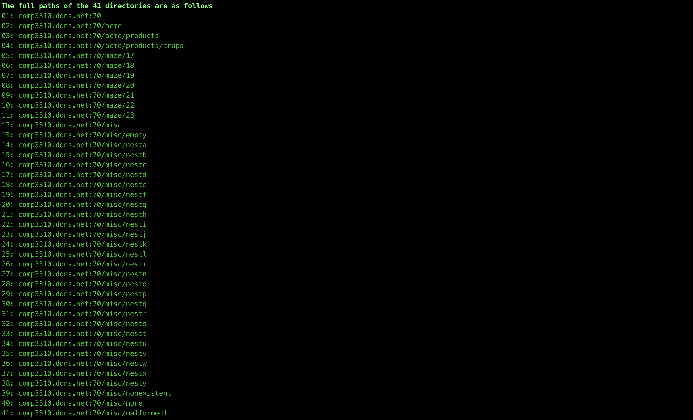

Assignment 2: Gopher Index
Directories
-
There are 41 Directories that the indexer was able to find.
-
Their full paths are as follows:

-
The data for each directory is stored using a custom Dir object.
from dataclasses import dataclass
from typing_extensions import Self
from dataclasses import field
@dataclass(frozen=True)
class Dir:
path : str
raw : bytes
error : str = ''
lines : list[str] = field(init=False)
success : bool = field(init=False)
def __post_init__(s: Self):
lines = s.raw.decode("utf-8", "replace").splitlines()
if lines and lines[-1] == '.': lines.pop()
object.__setattr__(s, 'lines', s.raw.decode("utf-8", "replace").splitlines())
object.__setattr__(s, 'success', False if s.error else True)
def __str__(s: Self)->str: return .path
- The indexer stores the information of each directory in a Dir object. The object contains information about the raw data, error encountered(if any) while receiving data, the lines that are basically computed from the raw data received and whether all data was received successfully according to the indexer.
Text Files
-
There are 15 text files that the indexer was able to find. Their paths alongside their sizes are as follows.
-
The maximum data received from a text file was from /misc/firehose before the connection was interrupted as the server never stopped sending data for that file.
-
As you can see, the indexer was able to receive some data for all text files except misc/godot.
-
The indexer stores the text file data in TextFile object.
from dataclasses import dataclass
from typing_extensions import Self
from dataclasses import field
@dataclass(frozen=True)
class TextFile:
path : str
raw : bytes
error : str
content : str = field(init=False)
size : int = field(init=False)
success : bool = field(init=False)
def __post_init__(s: Self):
object.__setattr__(s, 'content', s.raw.decode("utf-8", "replace"))
object.__setattr__(s, 'success', True if not s.error else False)
object.__setattr__(s, 'size', len(s.raw))
def __str__(s: Self)->str: return s.path
-
The file requests for which data connection was closed after reading the entire data are considered to be successful. Requests where no data was received or the indexer had to interrupt the connection are not considered to be completed successfully. But the indexer stores whatever data was received before the receive is interrupted in the TextFile object.
-
There are different ways that these bad receives from the server are handled, they will be discussed in a later section.
-
Largest File
comp3310.ddns.net:70/misc/firehose
- Size of Data Received(Bytes)
- Sample of the Content:
b'For a number of years now, work has been proceeding in order to bring perfection to the crudel ...
-
Smallest File
comp3310.ddns.net:70/misc/godot- No Data Received
-
Smallest File with data
comp3310.ddns.net:70/misc/empty.txt- Size of Data Received(Bytes)
- Content
-
Some More Samples of the content